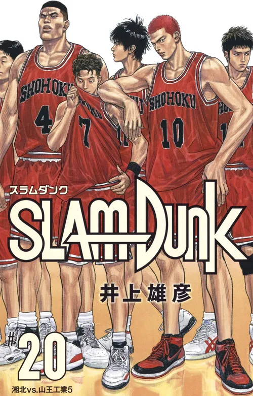
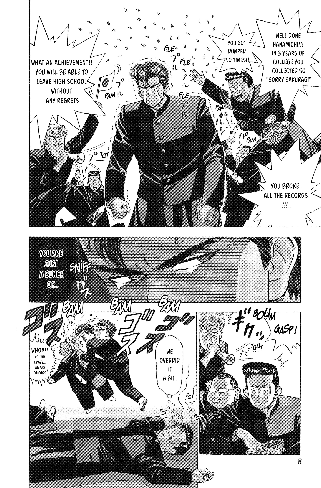

Slam Dunk
by Takehiko Inoue
Synopsis
Hanamichi Sakuragi is a hotheaded high school delinquent with a long history of rejection in love. When he meets Haruko Akagi, a girl who loves basketball, he joins the Shohoku High School basketball team to impress her, despite knowing nothing about the sport. As Sakuragi discovers his natural athletic talent, he develops a passion for basketball and forms bonds with his teammates while competing against powerful rivals and chasing victory on the court.
Chapter 1

Hanamichi Sakuragi starts high school with a reputation as a troublemaker and a record of being rejected by girls. His life takes an unexpected turn when he meets Haruko Akagi, who asks whether he likes basketball.
Hoping to impress Haruko, Sakuragi attempts to show off his athletic ability despite having no experience with the sport. His encounter with basketball marks the beginning of a journey that will challenge his pride, develop his talents, and introduce him to the excitement of competitive play.
— End of chapter —